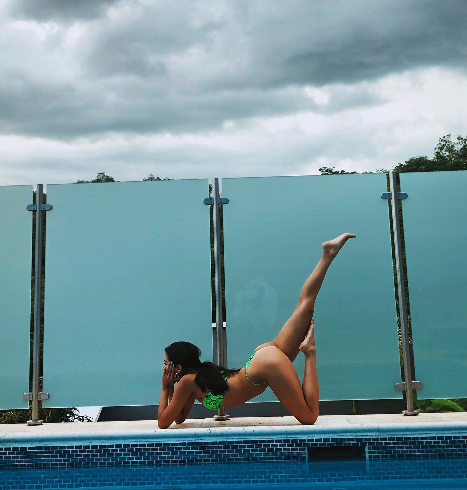
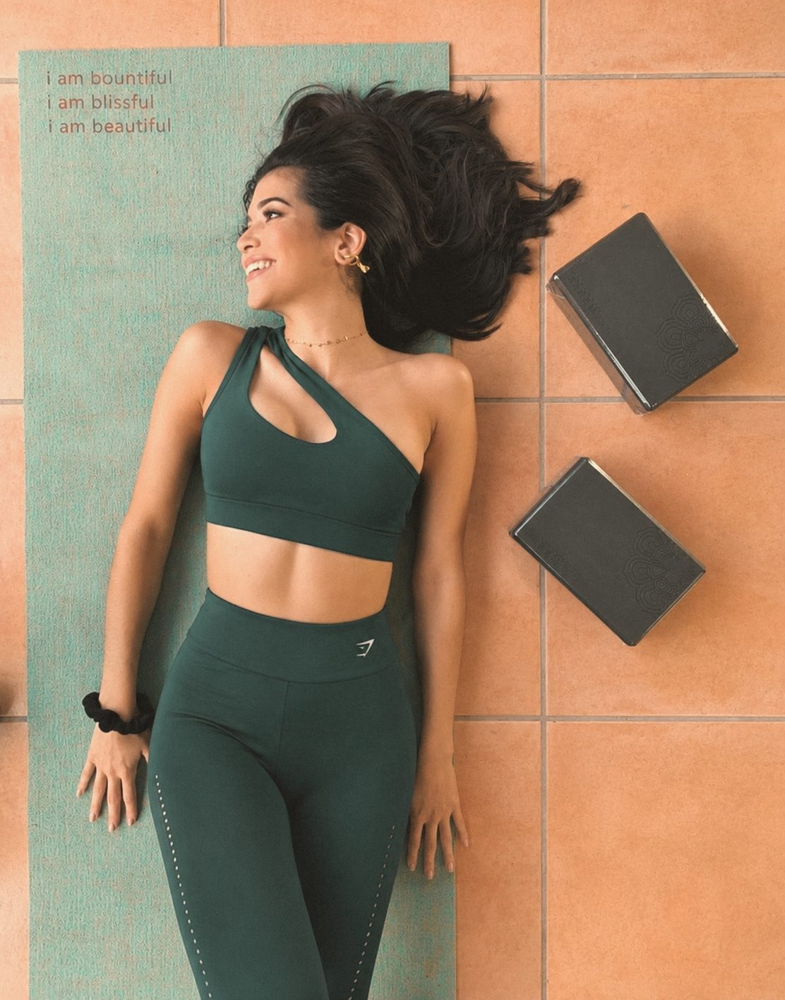
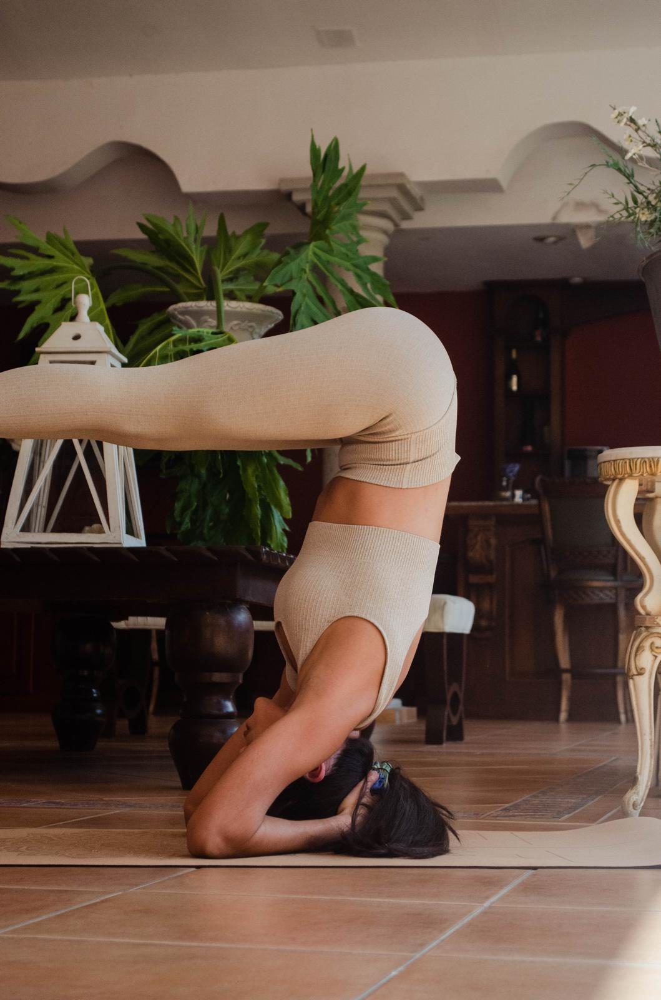
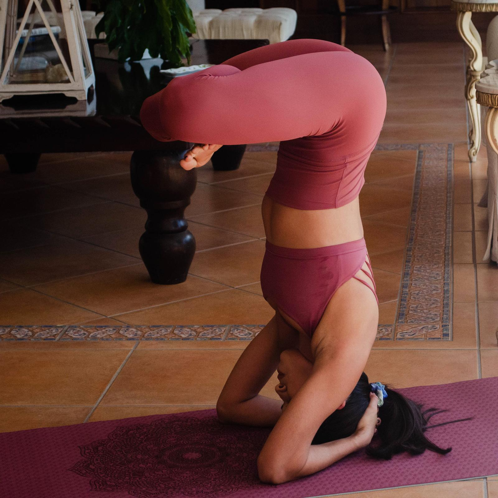
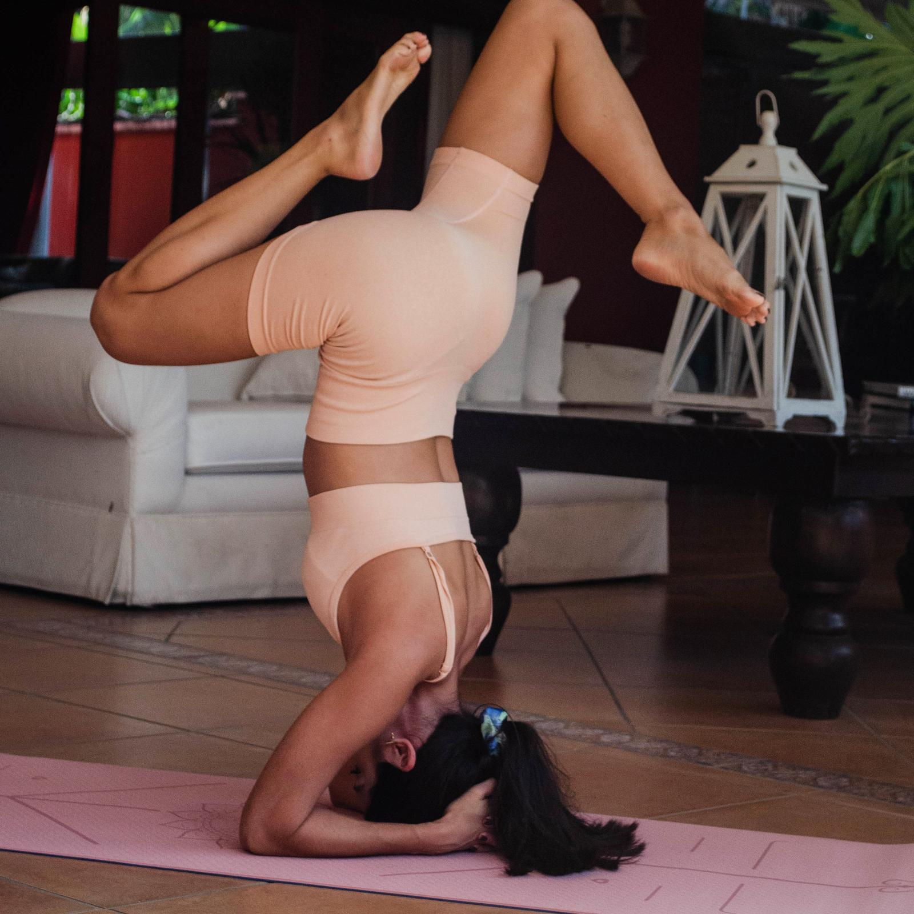

MY STORY
Why I started LUX.
I moved to Europe when things were difficult back home in Honduras. Far from the people I loved, I was learning how to look after my mental health and understand my ADHD.
Yoga gave me a little time to myself. Some days all I did was sit on my mat and breathe. Little by little, I started to feel like myself again.
Now that I’m returning to Honduras, I want to share what helped me. That’s where LUX began. I want it to be a place where we can move together and talk honestly about how we’re doing.
Mafer
1 of 4
Flying lotus
Watch on TikTok ↗A backbend, little by little
Watch on Instagram ↗Finding my flow
Watch on TikTok ↗


